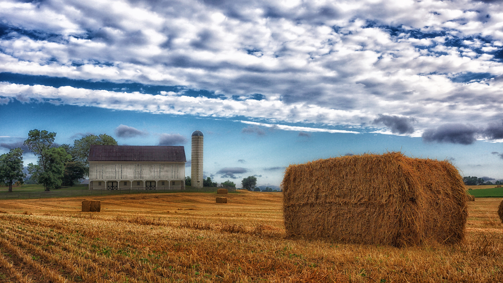

Opening agriculture data for innovation: stories from local to global
When data related to agriculture and food is made open or shared more easily, more can be done by scientists, governments, NGOs and farmers to improve agriculture outcomes, say Bianca Wylie, Nikos Manouselis and Ashleigh Weeden
 There is a big opportunity to use data and technology to support economic development in rural areas. CC BY 2.0, uploaded by [Ted Van Pelt](https://www.flickr.com/photos/bantam10/16211797230/in/photolist-qGzGvm-dWLJMG-57gmru-oWdSQ1-8gpmxK-nJfK9S-HzDEPi-9MwTYE-iboBbX-5isyii-oGBF6W-CfnZTK-dDLMsM-4FjHqm-PHLdk-fxM46c-6AVGj-eSEEV-oNixzK-3yrcY-a4ojB-6UFJoA-6UUMqg-qrYSx5-xFmo-fUyb4e-5nRbKM-htYGmo-88USk1-6BK5dt-4WAj2x-oDg7Vu-g2GybS-92GLaz-7wFxiM-pTTfUn-o22uWa-7tMPVr-axYwDK-bfof44-beYQee-oDSVfN-ai6MpL-4UrD78-dtWx9c-8TZxEc-dt3nc3-4UrDYK-4UrEq2-iAg3cE “Ted Van Pelt").
By Bianca Wylie, Nikos Manouselis and Ashleigh Weeden
With global hunger, food security and food safety so vital to human health, productivity and wellbeing, agriculture is incredibly important to many stakeholders.
As such, the community invested in agriculture data goes well beyond traditional farm businesses – it involves charities and foundations, corporations, academic institutions, farming co-operatives, agencies, the United Nations and many others. Knowledge-sharing between organisations is increasingly a concern for those in the sector to complement each other’s work, learn from each other’s insights and collaborate to create value in the sector.
Agroknow is a company that connects agriculture data users and delivers data-powered solutions to a range of stakeholders. Its aim is to support knowledge sharing, improve agriculture outcomes and support organisations that represent farmers and the sector more broadly. Agroknow have been doing this work for over eight years, and are one of the most active members of the Global Open Data for Agriculture and Nutrition initiative (GODAN).
Through GODAN, Agroknow advocates for open data related to agriculture and food, leading a working group that looks at the agriculture data ecosystem and considers how to build the data infrastructure to support agriculture data creation and use. This topic was one of several touched on in the 2015 joint discussion paper by GODAN and the Open Data Institute, eventually leading to the publication a data ecosystem discussion paper in 2016.
What does open agriculture data look like?
A key resource for open data on agriculture is the AGRIS Portal, hosted by the Food and Agriculture Organisation of the United Nations (FAO). The portal provides a bibliographic search of over 8 million records from (mostly) open access journals and institutional repositories related to agricultural methods and techniques. This is an immensely valuable research tool for scientists, extension officers and farmers everywhere, and with web traffic of 350,000 users per month, it's clearly serving a large need.
Then there are the more localised projects, such as TAPipedia – a site that focuses on capacity-building support for farmers in tropical countries. The site shares methods and processes for innovation in agriculture and practices that can be used by countries with shared climates, with the help of government stakeholders acting as convening forces to implement them.
Bridging local and global initiatives
As part of a meetup in Canada earlier this year, Agroknow Founder and CEO Nikos Manouselis and his colleague Giannis Stoitsis met with a range of academics from the University of Guelph and staff from Grey County to talk about agricultural innovation and open data. At the time, Grey County were a few weeks away from their first rural innovation and ag-tech showcase, the Ag 4.0 Summit + Innovation Tour, and planning its first tech-competition, Apps for Ag.
Long-time advocate of open government and open data Ashleigh Weeden leads Grey County’s Connected County Initiative, which seeks to support Grey County’s residents, businesses, and institutions in leveraging the broadband economy for community development. Ashleigh sees immense opportunity for open data and technology to continue shifting the economies and employment opportunities in rural communities.
"Rural communities have always been resilient, and agriculture has always been an incredibly technical and innovative sector. Now the rest of the digital economy is seeing and seizing those opportunities," said Ashleigh at the meetup. She also highlighted the need to “make sure all the different agricultural stakeholders are talking”, and sharing their data.
In Ontario, the counties of Bruce and Grey and a number of their public institutions are looking into new ways of sharing and opening data. In addition to the data consortium model, where local governments jointly purchase data, Ashleigh and her colleagues are looking for ways to share more and improve the "how" of sharing, such as finding ways to make it easier for granting bodies, other government bodies and farmers themselves to get access to relevant data.
Data sharing with different levels of access can be tricky. Not all of the data brought to the table by different data stewards can be made open, while some data can be shared between organisations but not publicly. This challenge raises questions of how to make data interoperable between governments and agencies, while still making it accessible to the broader public if and when possible. These are issues of tech and trust that Ashleigh and her team work through day to day. The new data-sharing model that the counties of Bruce and Grey, and a number of their public institutions, are looking at includes an explicit commitment to principles of openness and transparency and will leverage a shared data platform to manage data in a collaborative model.
Paving the way for economic development in rural areas
When it comes to agriculture data, Ashleigh makes an important point. "There is a big opportunity to use data and technology to support economic development in rural areas, which gives the government incentive to participate in the open economy. In playing [a] convening role, we can bring together the research, the support and the incentives for future generations to engage with agriculture. This may mean actively farming as a commodity producer, but it may also mean creating smart farm tech and other goods and services related to the data-driven economy."
The innovation discussion is arguably far too focused on urban centres. Grey County’s recent Ag 4.0 initiative and its related Apps for Ag tech-competition offers an example of a way to highlight innovation already happening in a rural community, while bringing people from data and tech into the conversation to find solutions for future. Other good examples include the GreenHackathon.com and the AgriHackathon movements.
Ultimately, programmes like these help us to reimagine a future for rural communities where tech plays a central role.
With Agroknow and its partner organisations at GODAN working to promote the data infrastructure for agriculture globally, and with initiatives like Grey County’s Ag 4.0 doing the same locally, a very promising open data network for agriculture is beginning to emerge.
Ashleigh Weeden, MPA, is the Project Lead for Grey County's Connected County Initiative; Nikos Manouselis is CEO of Agroknow and Bianca Wylie is Head of ODI Toronto
The GODAN network is always looking to expand. You can find out more about how to become a partner here.
If you have ideas or experience in open data that you'd like to share, pitch us a blog or tweet us at @ODIHQ.